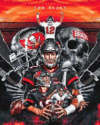

Tom Brady (born August 3, 1977) is a retired NFL quarterback widely considered the greatest of all time, holding records for passing yards (89,214), touchdowns (649), and wins. He won seven Super Bowls in 23 seasons—six with the New England Patriots and one with the Tampa Bay Buccaneers—before retiring "for good" in 2023.
